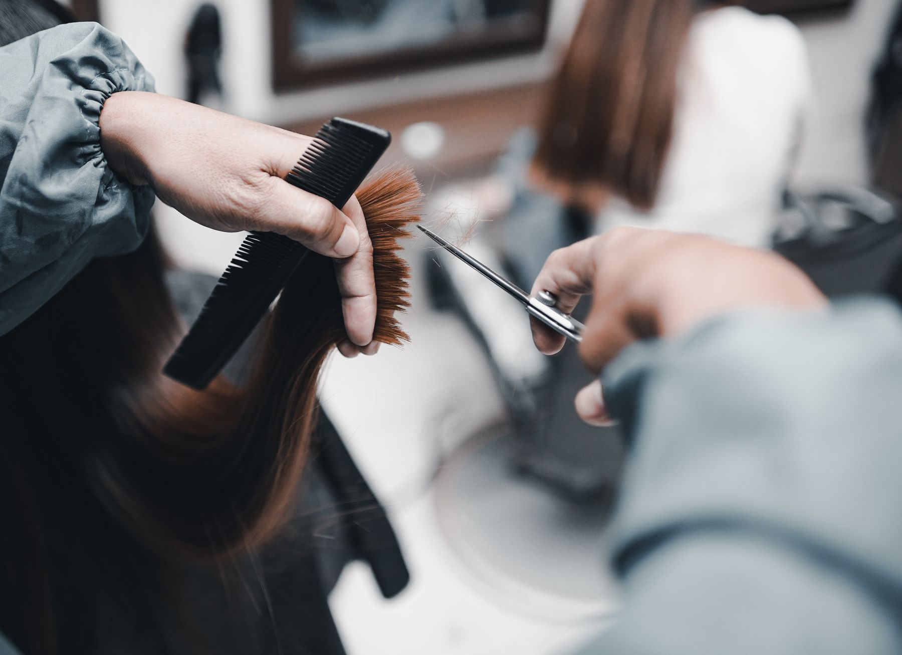
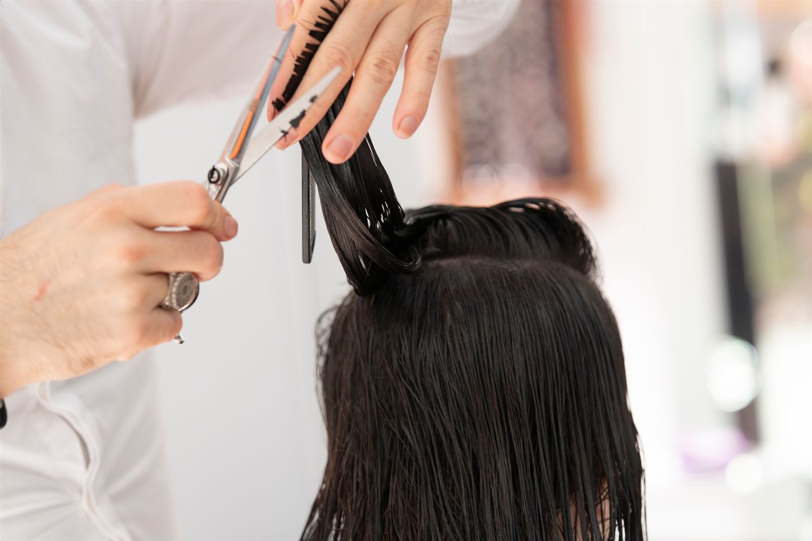
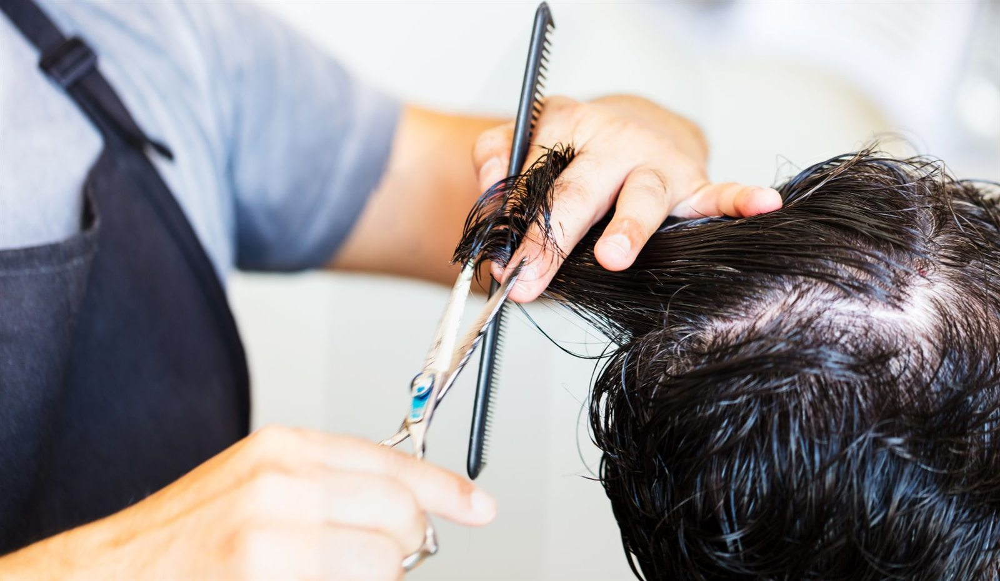
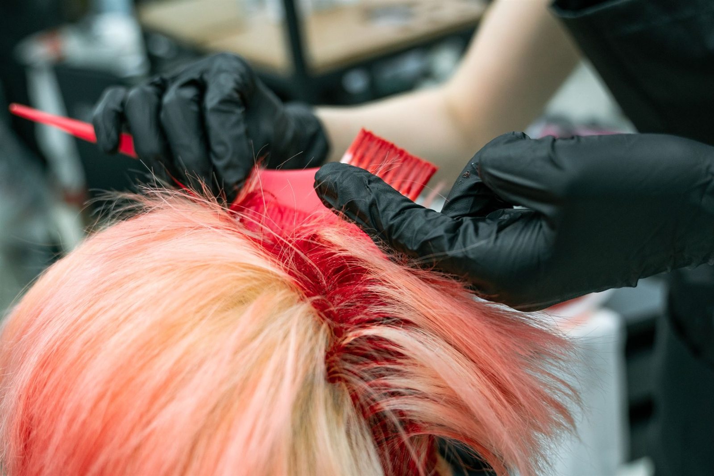
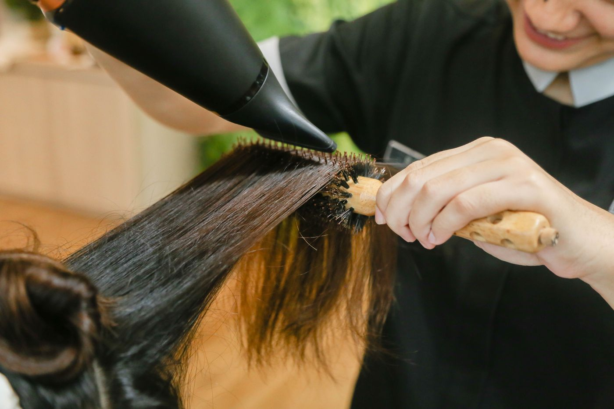
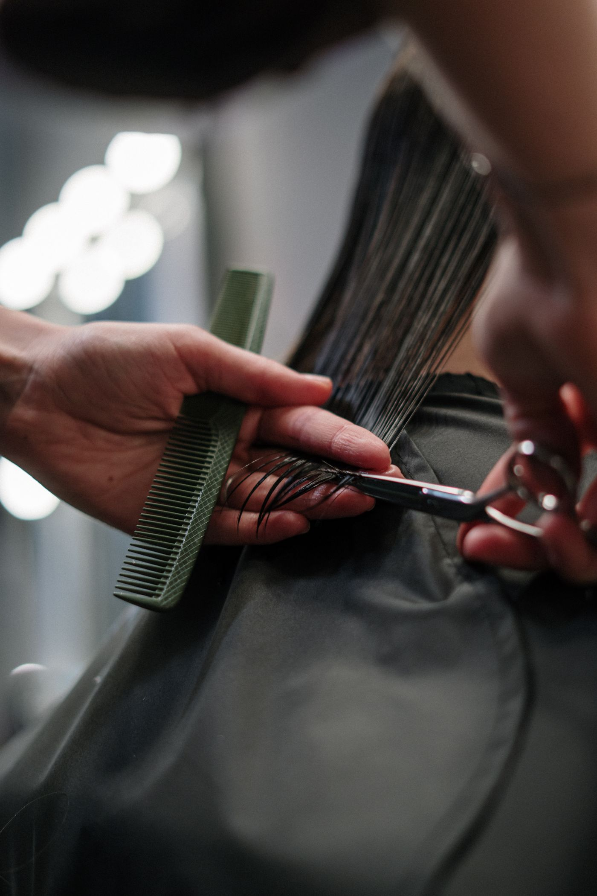
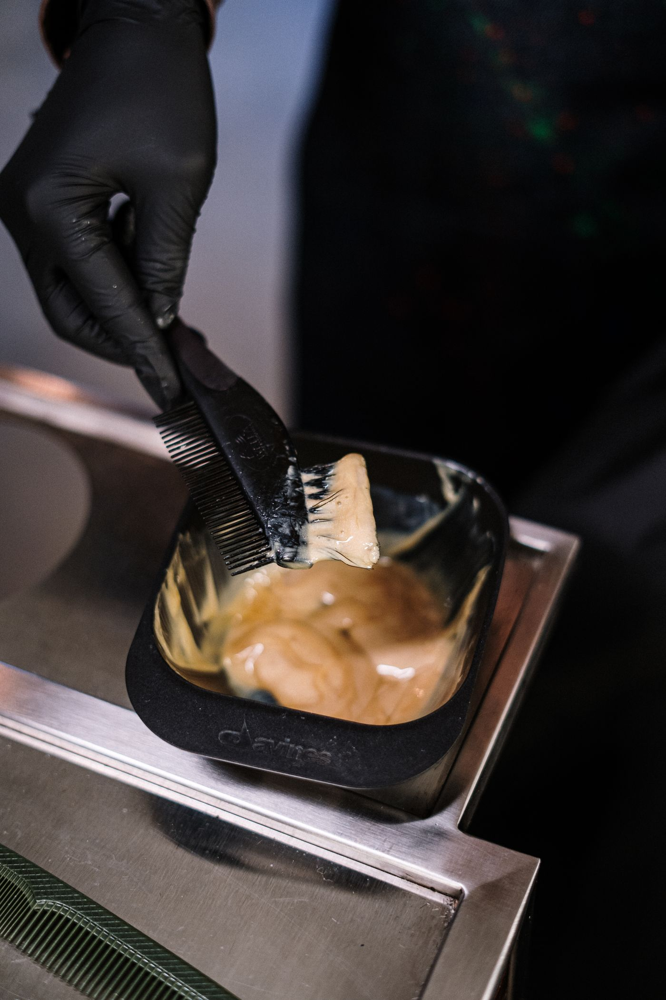
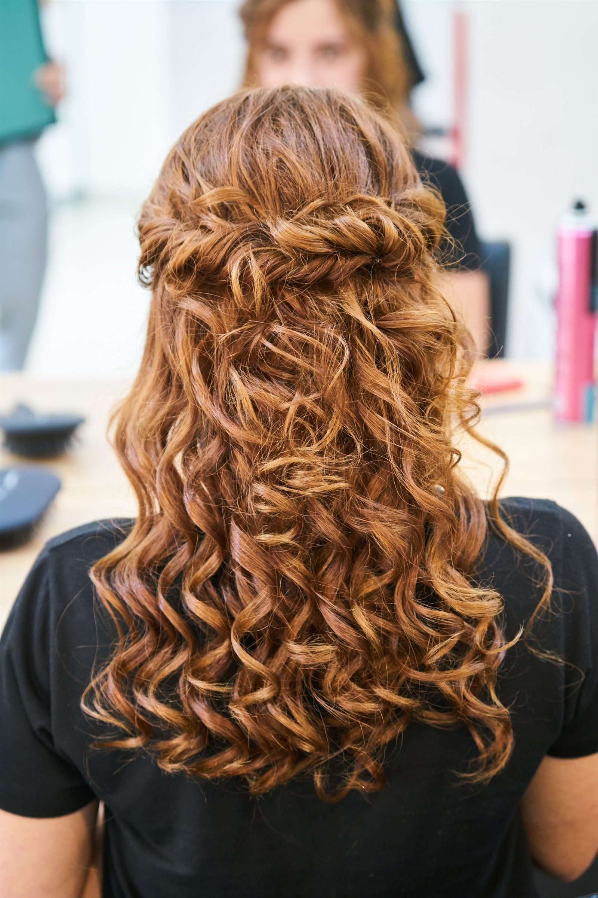

EL ARTE DEL CABELLO
EL BOSQUE · CÁDIZ
MARI CARMEN
PELUQUERÍA PARA SEÑORAS Y CABALLEROS
Una mirada al oficio
01 / NUESTRA RAZÓN DE SER
Cada corte
cuenta.
02 / EXPLORA TU ESTILO
Una idea.
Muchas posibilidades.
Categorías propuestas, pendientes de confirmar.
Consulta disponibilidad y precios directamente con el salón.
Selecciona una categoría para conocer más
01Corte y peinado femenino
La forma, el largo, el movimiento. Una categoría para hablar de cómo te gustaría llevar tu cabello.
Consultar esta categoría Imagen ilustrativa · Disponibilidad pendiente de confirmar.02Corte masculino
Un cambio de forma o mantener tu corte. Cuéntanos qué buscas y consulta las opciones para tu próxima visita.
Consultar esta categoría Imagen ilustrativa · Disponibilidad pendiente de confirmar.03Coloración
Matices, tonos y nuevas ideas. Pregunta por las posibilidades de coloración y su disponibilidad antes de concertar tu cita.
Consultar esta categoría Imagen ilustrativa · Disponibilidad pendiente de confirmar.04Peinados y acabados
El gesto final también cuenta. Consulta las opciones de peinado y acabado para la idea que tienes en mente.
Consultar esta categoría Imagen ilustrativa · Disponibilidad pendiente de confirmar.03 / TRABAJO EN ACCIÓN
No es solo cabello.
Es el oficio.
Las manos. La herramienta. El gesto.
Una mirada al trabajo que da forma al estilo.
Fotografías ilustrativas del oficio. No muestran el establecimiento, su equipo ni trabajos realizados por Mari Carmen.
Fuentes y licencias ↗04 / DETALLES DEL OFICIO
De un gesto
a otro.
Una representación visual de trabajos habituales de peluquería; no es un protocolo específico del salón.

La forma empieza en un detalle.

El matiz cambia la mirada.

El último gesto lo une todo.
Imágenes de stock ilustrativas, ajenas al salón.
05 / NOS VEMOS EN EL BOSQUE
UNA LLAMADA. TU PRÓXIMA CITA.Tu próximo corte
empieza aquí.
685 807 415
Peluquería Mari CarmenSeñoras y caballeros
C. Sevilla, 411670 El Bosque, Cádiz
Consulta disponibilidad y concertamos tu cita por teléfono.